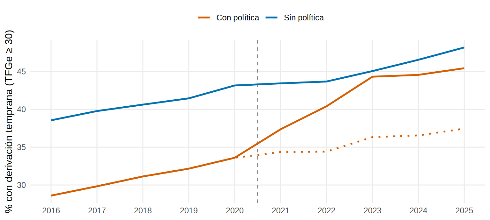
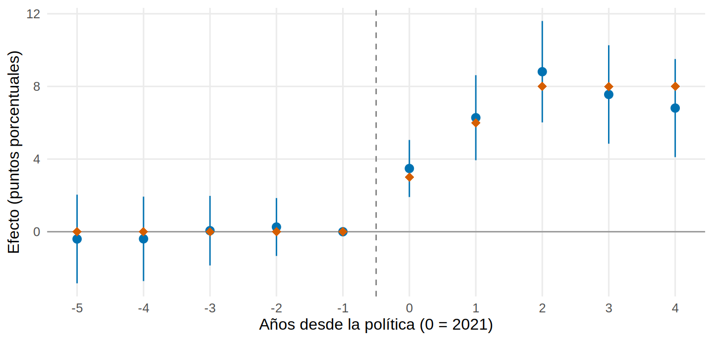
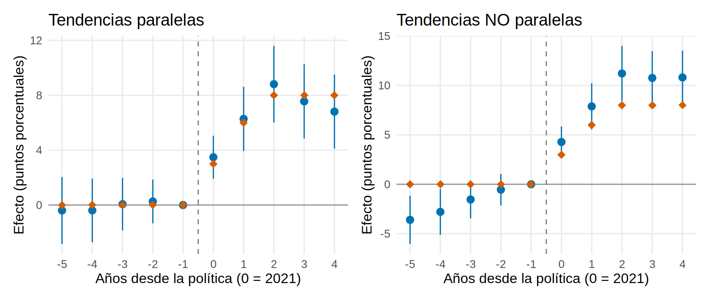
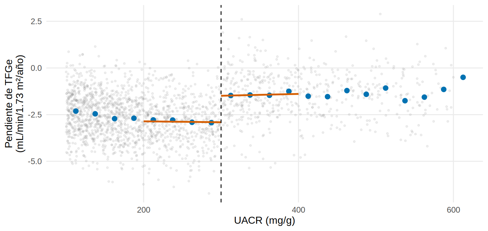
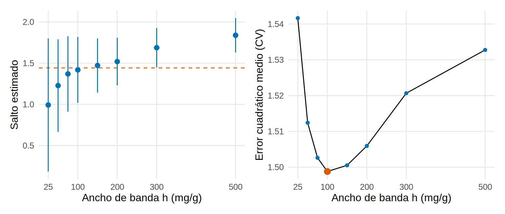
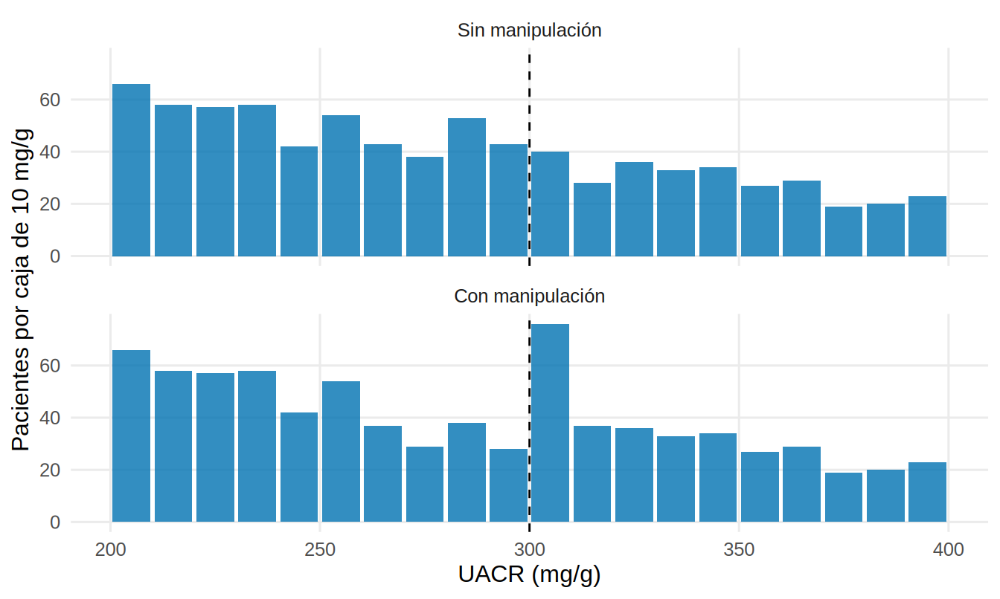

library(tidyverse)
library(sandwich) # vcovCL(): errores estándar agrupados
library(lmtest) # coeftest()
library(clubSandwich) # coef_test(): errores agrupados con pocos grupos (CR2)
library(car) # linearHypothesis()
library(patchwork)
source("R/funciones_extra_a.R") # num(), pct()
source("R/simular_cap19_cuasi.R") # simular_did(), simular_rdd()
source("R/funciones_cap19_cuasi.R") # evento_estudio(), rdd_local(), cv_ancho(), prueba_densidad()
theme_set(theme_minimal(base_size = 12) + theme(panel.grid.minor = element_blank()))
col_trat <- "#D55E00"; col_ctrl <- "#0072B2"
# 24 regiones (10 con política desde 2021) x 10 años (2016-2025). DATOS SIMULADOS.
panel <- simular_did()
att_verdad <- mean(panel$efecto[panel$tratada == 1 & panel$post == 1]) # efecto medio verdadero en las tratadasDiferencias en diferencias y regresión discontinua
Nota🩺 Escenario
Dos situaciones muy parecidas a las que verás en tu hospital. Una: diez regiones de tu país adoptaron en 2021 una política de derivación temprana a nefrología (derivar con TFGe ≥ 30 en vez de esperar a TFGe < 30) y otras catorce no. Quieres saber si funcionó, y las regiones que la adoptaron partían de peor situación. Otra: tu hospital autoriza el iSGLT2 solo si la UACR es ≥ 300 mg/g. Dos pacientes con UACR de 295 y de 305 son casi idénticos, pero uno recibe el fármaco y el otro no. Ese “corte” arbitrario es un experimento natural.
Lo que vamos a hacer
- Diferencias en diferencias (DiD): comparar el cambio en las regiones con política con el cambio en las regiones sin ella; estimarlo en un diseño 2×2 y con varios años (estudio de eventos), con errores estándar agrupados por región.
- Regresión discontinua (RDD): comparar a los pacientes justo a cada lado de un umbral; elegir el ancho de banda y comprobar que no hay manipulación del umbral.
- Comparar siempre con la verdad, porque los datos son simulados (
R/simular_cap19_cuasi.R).
Para el caso de una sola región tratada y una serie mensual larga, mira antes la serie temporal interrumpida (Cap. 15.3) y la serie con grupo control (15.5); aquí hay muchas unidades y pocos periodos.
Parte A. Diferencias en diferencias
Paso 1. Mirar las trayectorias
El desenlace es el % de primeras consultas de nefrología con TFGe ≥ 30 (derivación temprana). Dibujamos la media de cada grupo por año. La línea punteada es el contrafactual: lo que habrían hecho las regiones tratadas sin política (solo lo conocemos porque simulamos).
medias <- panel |> group_by(tratada, anio) |>
summarise(observado = mean(pct_temprana), sin_politica = mean(y0), .groups = "drop") |>
mutate(grupo = ifelse(tratada == 1, "Con política", "Sin política"))
cambio_pre <- \(g) medias$observado[medias$tratada == g & medias$anio == 2020] - medias$observado[medias$tratada == g & medias$anio == 2016]
pre_trat <- cambio_pre(1); pre_ctrl <- cambio_pre(0)
ggplot(medias, aes(anio, observado, colour = grupo)) +
geom_vline(xintercept = 2020.5, linetype = "dashed", colour = "grey50") +
geom_line(linewidth = 1) +
geom_line(data = filter(medias, tratada == 1), aes(y = sin_politica), linetype = "dotted", linewidth = 1) +
scale_colour_manual(values = c("Con política" = col_trat, "Sin política" = col_ctrl)) +
scale_x_continuous(breaks = 2016:2025) +
labs(x = NULL, y = "% con derivación temprana (TFGe ≥ 30)", colour = NULL) + theme(legend.position = "top")
Qué vemos: las regiones que adoptaron la política partían más abajo (28.6 % frente a 38.5 % en 2016). Antes de 2021 ambos grupos subían a un ritmo parecido (de 2016 a 2020: 5.0 puntos las tratadas y 4.6 las control). Después, el grupo con política se despega.
Paso 2. El diseño 2×2: dos restas
La idea de la DiD son dos restas: (1) el cambio antes-después en las regiones tratadas incluye el efecto de la política más la tendencia secular; (2) el cambio en las regiones control mide solo la tendencia secular. Restando, queda el efecto (si las tendencias habrían sido paralelas).
tab22 <- panel |> group_by(tratada, post) |> summarise(media = mean(pct_temprana), .groups = "drop") |>
pivot_wider(names_from = post, values_from = media, names_prefix = "post_") |>
mutate(cambio = post_1 - post_0, grupo = ifelse(tratada == 1, "Con política", "Sin política"))
dif_trat <- tab22$cambio[tab22$tratada == 1]; dif_ctrl <- tab22$cambio[tab22$tratada == 0]
did22 <- dif_trat - dif_ctrl
tab22 |> select(grupo, antes = post_0, despues = post_1, cambio) |> mutate(across(where(is.numeric), \(v) round(v, 2)))# A tibble: 2 × 4
grupo antes despues cambio
<chr> <dbl> <dbl> <dbl>
1 Sin política 40.7 45.4 4.66
2 Con política 31.1 42.4 11.4 Qué vemos: en las regiones con política el porcentaje cambió 11.35 puntos (efecto más tendencia); en las control, 4.66 (solo tendencia). La DiD es 11.35 − 4.66 = 6.68 puntos, frente a un efecto medio verdadero de 6.6 en las tratadas. Lo mismo, como regresión: el coeficiente del producto tratada:post es la DiD.
m22 <- lm(pct_temprana ~ tratada * post, data = panel)
round(coef(m22), 2) (Intercept) tratada post tratada:post
40.71 -9.64 4.66 6.68 Paso 3. Con efectos fijos y errores estándar agrupados
Con muchos años y regiones se sustituye tratada y post por efectos fijos de región y de año (cada región y cada año tienen su propio nivel), y queda el coeficiente de tratada:post. Lo importante es la inferencia: los años de una misma región se parecen entre sí (aquí, ruido autocorrelacionado), así que cada región vale menos que “diez observaciones independientes”. Se agrupa por región.
m_fe <- lm(pct_temprana ~ tratada:post + factor(region) + factor(anio), data = panel)
b_fe <- coef(m_fe)[["tratada:post"]]
ee <- c(`Ingenuo (independientes)` = sqrt(vcov(m_fe)["tratada:post", "tratada:post"]),
`Robusto HC1` = sqrt(vcovHC(m_fe, type = "HC1")["tratada:post", "tratada:post"]),
`Agrupado por región (CR1)` = sqrt(vcovCL(m_fe, cluster = panel$region)["tratada:post", "tratada:post"]))
cr2 <- coef_test(m_fe, vcov = "CR2", cluster = panel$region)["tratada:post", ] # pocos grupos: corrección CR2
round(c(ee, `Agrupado CR2 (clubSandwich)` = cr2$SE), 2) Ingenuo (independientes) Robusto HC1
0.49 0.49
Agrupado por región (CR1) Agrupado CR2 (clubSandwich)
0.74 0.70 Qué vemos: el coeficiente es 6.7 (verdad 6.6). El error estándar ingenuo (0.49) es 1.5 veces menor que el agrupado (0.74): sin agrupar, los intervalos serían demasiado estrechos y los “efectos” demasiado significativos. Con solo 24 grupos conviene la corrección CR2 de clubSandwich (0.70, con 19.5 grados de libertad efectivos en lugar de los 23 nominales).
Paso 4. Estudio de eventos: ¿cuándo aparece el efecto?
El 2×2 devuelve un número, un promedio de 2021-2025. Pero un efecto puede crecer con el tiempo. El estudio de eventos estima un coeficiente por año relativo a la política (\(k = 0\) es 2021), tomando \(k=-1\) (2020) como referencia. Los coeficientes previos (\(k<-1\)) sirven para vigilar las tendencias paralelas. Con lm() y efectos fijos:
ev <- evento_estudio(panel) # lm(y ~ factor(k relativo, solo tratadas) + efectos fijos), EE agrupados por región
verdad_k <- panel |> filter(tratada == 1) |> group_by(k = k_rel) |> summarise(verdad = mean(efecto))
ev$tabla |> left_join(verdad_k, by = "k") |> mutate(verdad = replace_na(verdad, 0)) |>
mutate(across(where(is.numeric), \(v) round(v, 2))) |> select(k, est, ee, inf, sup, verdad)# A tibble: 10 × 6
k est ee inf sup verdad
<dbl> <dbl> <dbl> <dbl> <dbl> <dbl>
1 -5 -0.4 1.25 -2.84 2.04 0
2 -4 -0.39 1.19 -2.71 1.93 0
3 -3 0.06 0.98 -1.86 1.97 0
4 -2 0.26 0.81 -1.33 1.85 0
5 -1 0 0 0 0 0
6 0 3.48 0.8 1.91 5.05 3
7 1 6.28 1.19 3.94 8.62 6
8 2 8.81 1.42 6.02 11.6 8
9 3 7.56 1.38 4.85 10.3 8
10 4 6.81 1.38 4.11 9.51 8graf_evento <- function(tabla, titulo = NULL) {
ggplot(tabla, aes(k, est)) +
geom_hline(yintercept = 0, colour = "grey60") + geom_vline(xintercept = -0.5, linetype = "dashed", colour = "grey50") +
geom_pointrange(aes(ymin = inf, ymax = sup), colour = col_ctrl) +
geom_point(data = left_join(tabla["k"], verdad_k, by = "k") |> mutate(verdad = replace_na(verdad, 0)),
aes(y = verdad), shape = 18, size = 3, colour = col_trat) +
scale_x_continuous(breaks = -5:4) + labs(x = "Años desde la política (0 = 2021)", y = "Efecto (puntos porcentuales)", title = titulo)
}
graf_evento(ev$tabla)
Qué vemos: antes de la política los coeficientes rondan cero (entre -0.4 y 0.3); después, el efecto crece de 3.5 en el primer año a 8.8 en el tercero, y los rombos (verdad) quedan dentro de los intervalos. El único número del 2×2 (6.7) promedia este crecimiento.
Paso 5. Tendencias paralelas: qué mirar y qué NO prueba
El supuesto central es que, sin la política, ambos grupos habrían evolucionado igual (en promedio). Ese contrafactual no se observa en el periodo posterior. Lo que se puede hacer es mirar el pasado: ¿se movían igual antes? Veamos qué pasa cuando no son paralelas: repetimos la simulación con regiones tratadas que ya crecían más rápido (+0.8 puntos/año extra) independientemente de la política.
panel2 <- simular_did(dif_tend = 0.8)
ev2 <- evento_estudio(panel2)
did22_2 <- coef(lm(pct_temprana ~ tratada * post, data = panel2))[["tratada:post"]]
p_leads <- linearHypothesis(ev$modelo, ev$leads, vcov. = ev$vcov, test = "F")[2, "Pr(>F)"]
p_leads2 <- linearHypothesis(ev2$modelo, ev2$leads, vcov. = ev2$vcov, test = "F")[2, "Pr(>F)"]
graf_evento(ev$tabla, "Tendencias paralelas") + graf_evento(ev2$tabla, "Tendencias NO paralelas")
Qué vemos: en el segundo mundo la DiD da 10.7 (verdad: 6.6): el sesgo de 4.1 puntos es el crecimiento extra que ya traían las regiones tratadas y que la DiD atribuye a la política. Los coeficientes previos tienen una pendiente clara (de -3.6 a -0.5) y la prueba conjunta de los coeficientes previos lo detecta (p = 0.034), mientras que en el primero da p = 0.86.
Advertencia⚠️ Una prueba de tendencias previas que “sale bien” no demuestra el supuesto
Tres cautelas. (1) No rechazar no es probar: con pocas regiones la prueba tiene poca potencia y deja pasar desviaciones que sí sesgan. (2) Lo que importa es la tendencia después de la política, y esa nunca se ve. (3) Las tendencias paralelas dependen de la escala (puntos porcentuales o razón de tasas): pueden ser paralelas en una y no en otra. Argumenta con conocimiento clínico por qué los grupos habrían evolucionado igual, y si hay dudas usa análisis de sensibilidad a violaciones del paralelismo (Rambachan y Roth, 2023). Además, que las regiones tratadas partan más abajo no invalida la DiD (los efectos fijos lo absorben): lo que la invalida es que evolucionen distinto.
Paso 6. Si cada región adopta en un año distinto
Aquí todas las regiones tratadas adoptan en 2021. Si adoptan en años distintos (tratamiento escalonado), el modelo de efectos fijos con un solo coeficiente puede usar a las regiones ya tratadas como control de las que entran después y, si el efecto cambia con el tiempo, dar resultados engañosos (incluso de signo contrario; Callaway y Sant’Anna, 2021). Los paquetes did y fixest (estimador sunab) lo resuelven comparando cada cohorte solo con regiones aún no tratadas. No están instalados en el entorno de pruebas del libro, por lo que este código no está verificado aquí:
# Con los paquetes did y fixest (código no verificado en el entorno de pruebas del libro)
library(did); library(fixest)
panel_pk <- panel |> mutate(id_region = as.integer(factor(region)),
anio_adopcion = ifelse(tratada == 1, 2021, 0)) # 0 = nunca tratada
cs <- att_gt(yname = "pct_temprana", tname = "anio", idname = "id_region", gname = "anio_adopcion",
data = panel_pk, control_group = "nevertreated") # efecto por cohorte y año
aggte(cs, type = "dynamic") # estudio de eventos
# Estudio de eventos con efectos fijos y errores agrupados (equivalente a evento_estudio())
est_fe <- feols(pct_temprana ~ i(k_rel, tratada, ref = -1) | region + anio, cluster = ~region, data = panel)
iplot(est_fe)Parte B. Regresión discontinua
Paso 7. El experimento del umbral
En una regresión discontinua (RDD, regression discontinuity design) el tratamiento depende de que una variable continua (la variable de asignación, aquí la UACR) cruce un umbral (300 mg/g). Cerca del umbral, estar un poco por encima o por debajo es casi cuestión de azar (de la variabilidad de la medición), así que los pacientes a ambos lados son comparables. Esta RDD es nítida: todos los que están por encima reciben el fármaco y ninguno de los de abajo.
rd <- simular_rdd() |> mutate(x = uacr - 300) # 4 000 pacientes (SIMULADOS); x = distancia al umbral (mg/g)
efecto_umbral <- 0.9 + 0.6 * (log(300) - 4.8) # verdad: efecto individual esperado con UACR = 300
ate_rd <- mean(rd$ite) # verdad: efecto medio en toda la población
naive <- coef(lm(pendiente_tfg ~ isglt2, data = rd))[["isglt2"]]La comparación ingenua entre quienes están por encima y por debajo de 300 da 0.72, lejos del efecto medio (0.94) y del efecto en el umbral (1.44): los que tienen más albuminuria evolucionan peor por sí mismos, así que el contraste global mezcla el fármaco con el pronóstico. La RDD no compara a todos, sino a los que están pegados al umbral. Dibujamos las medias por cajas de 25 mg/g:
h <- 100
cajas <- cajas_rdd(filter(rd, between(x, -200, 300)), "pendiente_tfg", "x", 25)
ajuste_lado <- function(lado) {
dd <- rd |> filter(abs(x) < h, (x >= 0) == (lado == "der")) |> mutate(peso = 1 - abs(x) / h)
m <- lm(pendiente_tfg ~ x, data = dd, weights = peso)
tibble(x = seq(if (lado == "der") 0 else -h, if (lado == "der") h else 0, length.out = 30)) |>
mutate(y = predict(m, newdata = pick(x)), lado = lado)
}
ggplot() +
geom_point(data = filter(rd, between(x, -200, 300)), aes(x + 300, pendiente_tfg), alpha = 0.12, size = 0.8, colour = "grey50") +
geom_point(data = cajas, aes(caja + 300, media), size = 2.4, colour = col_ctrl) +
geom_line(data = bind_rows(ajuste_lado("izq"), ajuste_lado("der")), aes(x + 300, y, group = lado), colour = col_trat, linewidth = 1) +
geom_vline(xintercept = 300, linetype = "dashed") +
labs(x = "UACR (mg/g)", y = "Pendiente de TFGe\n(mL/min/1.73 m²/año)")
Qué vemos: la pendiente baja al subir la UACR (peor pronóstico), pero justo en 300 aparece un salto hacia arriba: el efecto del fármaco. La RDD mide la altura del salto entre las dos rectas en el umbral.
Paso 8. El ajuste local, a mano
Se ajusta, a cada lado y solo con los pacientes cercanos (a menos de \(h\) mg/g del umbral), una recta; cada paciente pesa más cuanto más cerca está (kernel triangular: peso = \(1 - |x|/h\)). El coeficiente de sobre (1 si UACR ≥ 300) es el salto. Es la función rdd_local(), que hace esto con lm(..., weights =) y un error estándar robusto:
r100 <- rdd_local(rd, "pendiente_tfg", "x", h = 100)
r100 |> mutate(across(where(is.numeric), \(v) round(v, 2)))# A tibble: 1 × 6
h estimado ee inf sup n
<dbl> <dbl> <dbl> <dbl> <dbl> <dbl>
1 100 1.42 0.2 1.02 1.82 800Qué vemos: con \(h\) = 100 mg/g (usa a 800 pacientes, el 20 % de la muestra), el salto es 1.42 (IC 95 %: 1.02 a 1.82), muy cerca del efecto verdadero en el umbral, 1.44. Fíjate en que no es el ATE de toda la población (0.94): la RDD estima el efecto local, en pacientes con UACR ≈ 300. Como el beneficio crece con la albuminuria, aquí el efecto en el umbral supera al promedio.
Paso 9. El ancho de banda: sesgo contra varianza
Un \(h\) pequeño usa solo pacientes muy parecidos (poco sesgo) pero pocos (mucha varianza). Un \(h\) grande gana precisión pero obliga a que una recta describa una curva (sesgo). La sensibilidad se ve recalculando con varios \(h\). Para elegir uno, usamos una validación cruzada de borde (Imbens y Lemieux, 2008) en cv_ancho():
anchos <- c(25, 50, 75, 100, 150, 200, 300, 500)
sens <- map_dfr(anchos, \(hh) rdd_local(rd, "pendiente_tfg", "x", hh))
cv <- cv_ancho(rd, "pendiente_tfg", "x", anchos)
h_cv <- cv$h[which.min(cv$ecm)]
r2 <- rdd_local(rd, "pendiente_tfg", "x", h = 300, grado = 2) # polinomio de grado 2 con h ampliog1 <- ggplot(sens, aes(h, estimado)) +
geom_hline(yintercept = efecto_umbral, colour = col_trat, linetype = "dashed") +
geom_pointrange(aes(ymin = inf, ymax = sup), colour = col_ctrl, size = 0.4) +
scale_x_continuous(breaks = c(25, 100, 200, 300, 500)) + labs(x = "Ancho de banda h (mg/g)", y = "Salto estimado")
g2 <- ggplot(cv, aes(h, ecm)) + geom_line() + geom_point(colour = col_ctrl) +
geom_point(data = filter(cv, h == h_cv), colour = col_trat, size = 3) +
scale_x_continuous(breaks = c(25, 100, 200, 300, 500)) + labs(x = "Ancho de banda h (mg/g)", y = "Error cuadrático medio (CV)")
g1 + g2
Qué vemos: con \(h\) = 25 el intervalo es muy ancho (0.19 a 1.80); con \(h\) = 100 se estabiliza cerca de la verdad (1.42); con \(h\) = 500 el IC es estrecho pero el estimado (1.84) se aleja de 1.44: la recta no describe bien una curva tan larga. La validación cruzada es muy poco pronunciada (el error varía solo de 1.499 a 1.542, con mínimo en \(h\) = 100), de modo que elige un valor razonable pero no decide sola: lo sensato es informar la sensibilidad. Un polinomio de grado 2 con \(h\) = 300 da 1.37 (1.03 a 1.71); evita polinomios de grado alto (Gelman e Imbens, 2019). Con rdrobust hay un selector óptimo y un IC corregido por sesgo (código sin verificar aquí):
# Con el paquete rdrobust (código no verificado en el entorno de pruebas del libro)
library(rdrobust)
m_rd <- rdrobust(y = rd$pendiente_tfg, x = rd$uacr, c = 300, kernel = "triangular", p = 1, bwselect = "mserd")
summary(m_rd) # estimación, ancho de banda y IC robusto
rdplot(y = rd$pendiente_tfg, x = rd$uacr, c = 300, x.lim = c(100, 600)) # gráfico con medias por cajasPaso 10. ¿Manipulan el umbral?
La RDD funciona si nadie puede elegir a qué lado del umbral cae. Si los clínicos repiten la muestra hasta que “salga” ≥ 300 en los pacientes con mejor pronóstico, faltarán pacientes justo por debajo y sobrarán por encima. Simulamos esa situación (manipulacion = TRUE) y miramos la densidad de la UACR alrededor de 300. La prueba de prueba_densidad() ajusta los conteos por cajas de 10 mg/g con una tendencia y un salto en 300:
rd_m <- simular_rdd(manipulacion = TRUE) |> mutate(x = uacr - 300)
pd <- prueba_densidad(rd$uacr, 300); pd_m <- prueba_densidad(rd_m$uacr, 300)
r_m <- rdd_local(rd_m, "pendiente_tfg", "x", h = 100)
bin <- binom.test(sum(rd$uacr >= 300 & rd$uacr < 350), sum(rd$uacr >= 250 & rd$uacr < 350)) # prueba binomial 50-50
bind_rows(mutate(pd$cajas, datos = "Sin manipulación"), mutate(pd_m$cajas, datos = "Con manipulación")) |>
mutate(datos = factor(datos, levels = c("Sin manipulación", "Con manipulación"))) |>
ggplot(aes(caja, n)) + geom_col(fill = col_ctrl, alpha = 0.8, width = 9) + geom_vline(xintercept = 300, linetype = "dashed") +
facet_wrap(~datos, ncol = 1) + labs(x = "UACR (mg/g)", y = "Pacientes por caja de 10 mg/g")
Qué vemos: sin manipulación la densidad baja suavemente (cociente de conteos arriba/abajo del corte = 0.95, IC 0.75 a 1.20, p = 0.67). Con manipulación aparece un hueco justo por debajo y un exceso por encima: cociente 2.06 (IC 1.45 a 2.92, p = 8e-04). Y la estimación se estropea: el salto sale 2.62 (verdad 1.44), porque entre los de “justo arriba” hay pacientes de mejor pronóstico que no deberían estar. Ojo con la prueba binomial ingenua (50-50): como la densidad ya desciende con la UACR, en los datos limpios habría dado p = 0.003, un falso aviso. Con rddensity existe una versión formal (McCrary mejorado; código sin verificar aquí):
# Con el paquete rddensity (código no verificado en el entorno de pruebas del libro)
library(rddensity)
summary(rddensity(X = rd$uacr, c = 300)) # H0: la densidad es continua en el umbralOtra comprobación, como en un ensayo: las covariables previas no deben saltar en el umbral. Con los datos sin manipular:
cov_rd <- map_dfr(c("edad", "hba1c", "pas", "tfg_basal", "ecv"), \(v) mutate(rdd_local(rd, v, "x", h = 100), variable = v))
cov_rd |> select(variable, salto = estimado, inf, sup) |> mutate(across(where(is.numeric), \(v) round(v, 2)))# A tibble: 5 × 4
variable salto inf sup
<chr> <dbl> <dbl> <dbl>
1 edad -0.15 -3.14 2.83
2 hba1c -0.15 -0.54 0.24
3 pas -2.29 -6.9 2.31
4 tfg_basal 0.31 -2.5 3.12
5 ecv -0.08 -0.2 0.03Qué vemos: en 5 de las 5 covariables el intervalo incluye el cero: no hay señales de que los pacientes de un lado y otro del umbral sean distintos en lo previo. Que no haya señales no es una prueba, pero cuando sí salta una covariable es un aviso serio.
Advertencia⚠️ Un efecto local, no general
La RDD estima el efecto en el umbral y solo ahí. Extrapolarlo a pacientes con UACR de 1 000 mg/g (o a los de 100) requiere supuestos adicionales. Además, si algunos pacientes por encima no reciben el fármaco (o los de abajo sí), la RDD es difusa (fuzzy) y funciona como una variable instrumental con el umbral como instrumento (Cap. 19.4): estima el efecto en los “cumplidores” del umbral. Y si un segundo tratamiento cambia en el mismo umbral (p. ej., otro fármaco o una derivación que también se activa en UACR 300), el salto mezcla ambos.
Importante🎯 En resumen
- La DiD resta dos cambios (tratados menos control): da 6.7 en el 2×2 y 6.7 con efectos fijos, frente a 6.6 verdaderos.
- Los errores estándar se agrupan por región: sin agrupar eran 1.5 veces más pequeños que los agrupados.
- El estudio de eventos muestra la dinámica del efecto y permite mirar el pasado; no demuestra las tendencias paralelas (cuando no lo eran, la DiD se sesgó 4.1 puntos).
- La RDD compara pacientes a ambos lados del umbral con un ajuste local; estima un efecto local (1.42 en el umbral, verdad 1.44).
- Muestra sensibilidad al ancho de banda y vigila la manipulación: con ella el salto sale 2.62.
Ejercicio
- En el Paso 3, vuelve a calcular
m_feconsimular_did(n_trat = 4)(menos regiones tratadas). ¿Cómo cambian el error estándar agrupado y el CR2? - En el Paso 4 usa como referencia \(k = -3\) en vez de \(-1\) (
evento_estudio(panel, ref = -3)). ¿Qué cambia en los coeficientes previos y por qué? - En el Paso 9, vuelve a estimar con
kerneluniforme (peso = 1) enrdd_local(): cambiapeso = 1 - abs(xx) / hporpeso = 1. ¿Cambian el estimado y el IC?
Referencias
- Callaway B, Sant’Anna PHC. Difference-in-differences with multiple time periods. J Econom. 2021;225(2):200-230.
- Rambachan A, Roth J. A more credible approach to parallel trends. Rev Econ Stud. 2023;90(5):2555-2591.
- Imbens GW, Lemieux T. Regression discontinuity designs: a guide to practice. J Econom. 2008;142(2):615-635.
- Gelman A, Imbens G. Why high-order polynomials should not be used in regression discontinuity designs. J Bus Econ Stat. 2019;37(3):447-456.
- Hernán MA, Robins JM. Causal Inference: What If. Chapman & Hall/CRC; 2020.
- Barrett M, D’Agostino McGowan L, Gerke T. Causal Inference in R. https://www.r-causal.org/ (lectura recomendada por el autor).